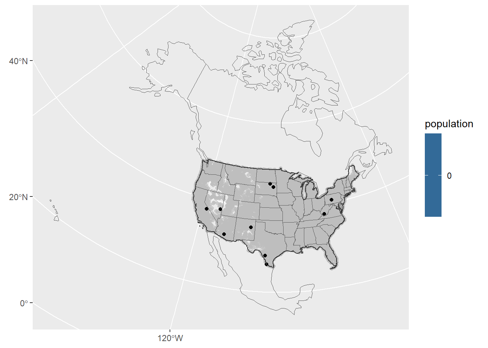

a flextable object.
col_keys: `city`, `state_name`, `xmexbound`, `geometry`
header has 1 row(s)
body has 5 row(s)
original dataset sample:
Simple feature collection with 5 features and 3 fields
Geometry type: POINT
Dimension: XY
Bounding box: xmin: 1955454 ymin: 973527.7 xmax: 1996054 ymax: 1113554
Projected CRS: +proj=eqdc +lat_0=40 +lon_0=-96 +lat_1=20 +lat_2=60 +x_0=0 +y_0=0 +datum=NAD83 +units=m +no_defs
city state_name xmexbound geometry
1 Grand Isle Maine 3282825 [m] POINT (1955454 1113554)
2 Caribou Maine 3250330 [m] POINT (1981391 1070427)
3 Presque Isle Maine 3234570 [m] POINT (1987753 1051523)
4 Oakfield Maine 3175577 [m] POINT (1996054 985958.8)
5 Island Falls Maine 3162285 [m] POINT (1991342 973527.7)
a flextable object.
col_keys: `city`, `state_name`, `xcanbound`, `geometry`
header has 1 row(s)
body has 5 row(s)
original dataset sample:
Simple feature collection with 5 features and 3 fields
Geometry type: POINT
Dimension: XY
Bounding box: xmin: -298391.5 ymin: -1502124 xmax: -292736.4 ymax: -1500516
Projected CRS: +proj=eqdc +lat_0=40 +lon_0=-96 +lat_1=20 +lat_2=60 +x_0=0 +y_0=0 +datum=NAD83 +units=m +no_defs
city state_name xcanbound geometry
1 Guadalupe Guerra Texas 2206455 [m] POINT (-298391.5 -1502124)
2 Sandoval Texas 2205641 [m] POINT (-298121.8 -1501313)
3 Fronton Texas 2204794 [m] POINT (-297775 -1500516)
4 Fronton Ranchettes Texas 2202118 [m] POINT (-293005.2 -1500698)
5 Evergreen Texas 2202020 [m] POINT (-292736.4 -1500773)
#Question 3 ##3.1 Data
library(ggplot2)ggplot() +geom_sf(data = uscities_x, aes(fill = population)) +gghighlight(max(population), max_highlight =10,label_key = city)+# ggrepel::geom_label_repel(# data = uscities_x,# aes(label = city,# stat = "geometry"),# size = 3)+geom_sf(data = nacountrydat, fill ="NA")+geom_sf(data = us_bound, fill ="NA")+geom_sf(data = statedat, fill ="NA")

#not sure why this is not displaying correctly. Labels were causing errors as well.
##3.2 City distance from the border
##3.3 City distance from nearest state ##3.4 Equidistant boundary from Mexico and Canada
#Question 4 ##4.1 Quantifing border zone ##4.2 Mapping border zone ##4.3 Instead of labeling the 10 most populous cites, label the most populous city in each state within the Danger Zone